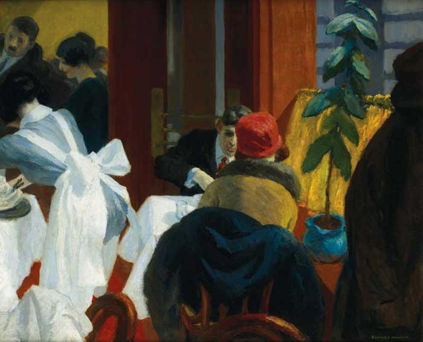

<head>
<meta charset="UTF-8" />
<meta name="keywords" content="drawing, painting" />
<meta name="description" content="drawings by Sunjy" />
<title>Sunjy</title>
<link rel="shortcut icon" type="image/x-icon" href="../../mImages/mCommon/favicon.ico" media="screen" />
<link rel="stylesheet" type="text/css" href="../../mCsses/mCommon/mCssA.css" />
<link rel="stylesheet" type="text/css" href="../../mCsses/mCommon/mCssB.css" />
<link rel="stylesheet" type="text/css" href="../../mCsses/mCommon/mCssC.css" />
<link rel="stylesheet" type="text/css" href="../../mCsses/mCommon/mCssD.css" />
<link rel="stylesheet" type="text/css" href="../../mCsses/mContent/mCssA.css" />
<link rel="stylesheet" type="text/css" href="../../mCsses/mContent/mCssB.css" />
<link rel="stylesheet" type="text/css" href="../../mCsses/mContent/mCssC.css" />
<link rel="stylesheet" type="text/css" href="../../mCsses/mContent/mCssD.css" />
</head>
<script type="text/javascript" src="../../mScripts/mContent/mContentAA.js" /></script>
<script type="text/javascript" src="../../mScripts/mContent/mContentAB.js" /></script>
<script type="text/javascript" src="../../mScripts/mContent/mContentAC.js" /></script>
<script type="text/javascript" src="../../mScripts/mContent/mContentAD.js" /></script>
<script type="text/javascript"></script> 
<script type="text/javascript">
document.write('<div class="mImgAbsolute"></div>');
/*
document.write('<p class="mFontSizeBColor" />From a white paper...</p>');
document.write('<table class="center"><tr><td>');
document.write('');
document.write('</td></tr></table>');
*/
</script>


<script type="text/javascript">
document.write('<p class="mFontSizeBColor" />New York Restaurant</p>');
document.write('<p class="mFontSizeSColor" />“New York Restaurant” by Edward Hopper depicts the rush hour at a restaurant with a man and his female companion sitting at a table.<br><br>They are engaged in conversation and their meal, while the busy activity of the restaurant carries on around them.<br><br>Hopper’s stated intention was: “to attempt to make visual the crowded glamour of a New York restaurant during the noon hour. I am hoping that ideas less easy to define have, perhaps, crept in also.”<br><br>Hopper has expertly used light to express how light isolates the human figure in a room. Also, his use of light and shadow has given the restaurant shape and meaning.<br><br>The viewer’s attention is led to the areas of light, independent of the human figures and objects in the composition.<br><br>The waitress, with her white uniform, the potted plant, a coat draped over a chair, and another hanging in the foreground, while all noticeable, do not detract from the main subject of the work.<br><br>Hopper was interested in creating an atmosphere, transcending the momentary, in which the occasion is on display. Instead of telling a story, the painting leaves the viewer to form their interpretation of the work.<br></p>');
document.write('<table class="center" /><tr><td>');
document.write('<br>They are engaged in conversation and their meal, while the busy activity of the restaurant carries on around them.<br><br>Hopper’s stated intention was: “to attempt to make visual the crowded glamour of a New York restaurant during the noon hour. I am hoping that ideas less easy to define have, perhaps, crept in also.”<br><br>Hopper has expertly used light to express how light isolates the human figure in a room. Also, his use of light and shadow has given the restaurant shape and meaning.<br><br>The viewer’s attention is led to the areas of light, independent of the human figures and objects in the composition.<br><br>The waitress, with her white uniform, the potted plant, a coat draped over a chair, and another hanging in the foreground, while all noticeable, do not detract from the main subject of the work.<br><br>Hopper was interested in creating an atmosphere, transcending the momentary, in which the occasion is on display. Instead of telling a story, the painting leaves the viewer to form their interpretation of the work.<br>" />');
document.write('</td></tr></table>');
</script>


